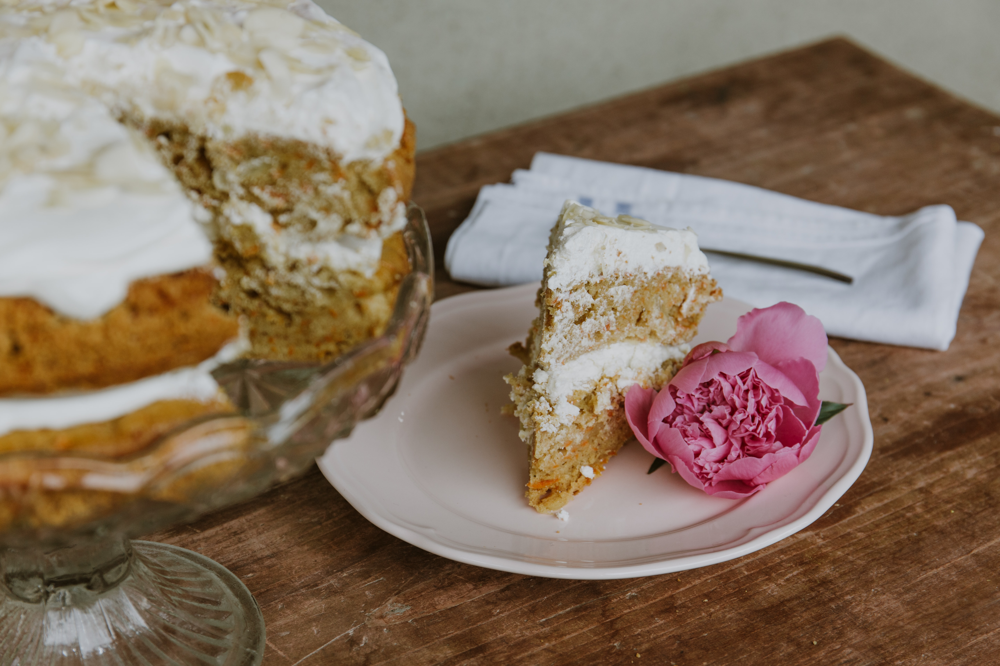

You can't buy happiness but you can buy cake and that's kind of the same thing
What about Carrot Cake?
Cake is a term with a long history, the word is of Viking origin from the old Norse - "Kaka". Cake denotes a baked flour confection sweetened with sugar and honey; it iscarrot cake mixed with eggs and often, but not invariably, with milk and fat and it has a porous texture from the mixture rising during cooking. The distinctions between bread, bun and biscuit are blurred as techniques for baking and leavening developed and eating patterns changed. Some Roman breads were enriched with eggs and butter and much have reached a cake-like consistency although still named as breads. According to food historians, our modern carrot cake most likely descended from Medieval carrot puddings enjoyed by people in Europe. No one really knows where carrot cake came from, It looks like it did evolve from the Carrot Pudding of medieval times, during the middle ages sugar and other sweeteners were difficult or expensive to come by in Britain and carrots had long been used as sugar substitutes. Carrot Pudding history here. Carrot cake and its precursors took several forms including baked in pastry, like pumpkin pie steamed and served with sauce, like plum pudding baked in pans and served with icing, like cake.
